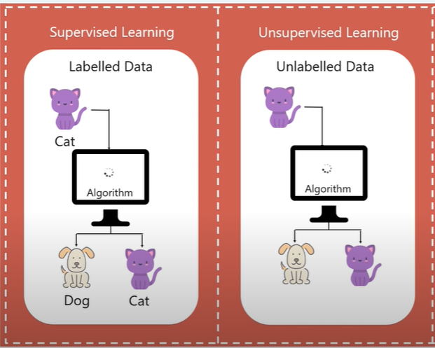

What is Machine Learning?
Machine learning is the branch of science that deals with algorithmsand systemsperforming specific tasks using patterns and inference(conclusion reached on the basis of evidence & reasoning), rather than explicitly programmed instructions. There are a variety of different use cases for machine learning, from image recognition to text generation.
Most machine learning tasks generalize to one of the following two learning types:
- Supervised learning:
- Using labeled data to train a model. The labels for the training dataset represent the class/category that each data observation belongs to. After training, the model should be able to predict labels for new data observations (from the same population distribution as the training data).
- Example: Let’s say you’re training a machine learning model to predict whether a picture contains a lake or not. With supervised learning, you would train a model on a dataset of pictures where the label for each picture is “Yes” if it contains a lake or “No” if it doesn’t. After training, the model will be able to take in a picture and determine whether or not it contains a lake.
- Unsupervised Learning:
- Using unlabeled data to allow a model to learn relationships between data observations and pick up on underlying patterns. Most data in the world is unlabeled, which makes unsupervised learning a very useful method of machine learning.
- Example: Going back to the same picture dataset from above, but now assume the training dataset is unlabeled. Using unsupervised learning, a model will be able to pick up on the inherent differences between pictures with a lake and pictures without a lake, e.g. differences in pixel color or orientation. This allows the model to cluster the pictures into two separate groups.
 
Steps of the Machine Learning Process
Data Collection: The process of extracting raw datasetsfor the machine learning task. This data can come from a variety of places, ranging from open-source online resources to paid crowdsourcing. The first step of the machine learning process is arguably the most important. If the data you collect is poor quality or irrelevant, then the model you train will be poor quality as well.
- Data Processing and Preparation:Once you’ve gathered the relevant data, you need to process it and make sure that it is in a usable format for training a machine learning model. This includes handling missing data, dealing with outliers, etc.
- Feature Engineering: Once you’ve collected and processed your dataset, you will likely need to transform some of the features (and sometimes even drop some features) in order to optimize how well a model can be trained on the data.
- Model Selection: Based on the dataset, you will choose whichmodel architecture to use. This is one of the main tasks of industry engineers. Rather than attempting to come up with a completely novel model architecture, most tasks can be thoroughly performed with an existing architecture (or combination of model architectures).
- Model Training and Data Pipeline: After selecting the model architecture, you will create a data pipeline for training the model. This means creating a continuous stream of batched dataobservations to efficiently train the model. Since training can take a long time, you want your data pipeline to be as efficient as possible.
- Model Validation: After training the model for a sufficient amount of time, you will need to validate the model’s performance on a held-out portion of the overall dataset. This data needs to come from the same underlying distribution as the training dataset, but needs to be different data that the model has not seen before.
- Model Persistence: Finally, after training and validating the model’s performance, you need to be able to properly save the model weights and possibly push the model to production. This means setting up a process with which new users can easily use your pre-trained model to make predictions.